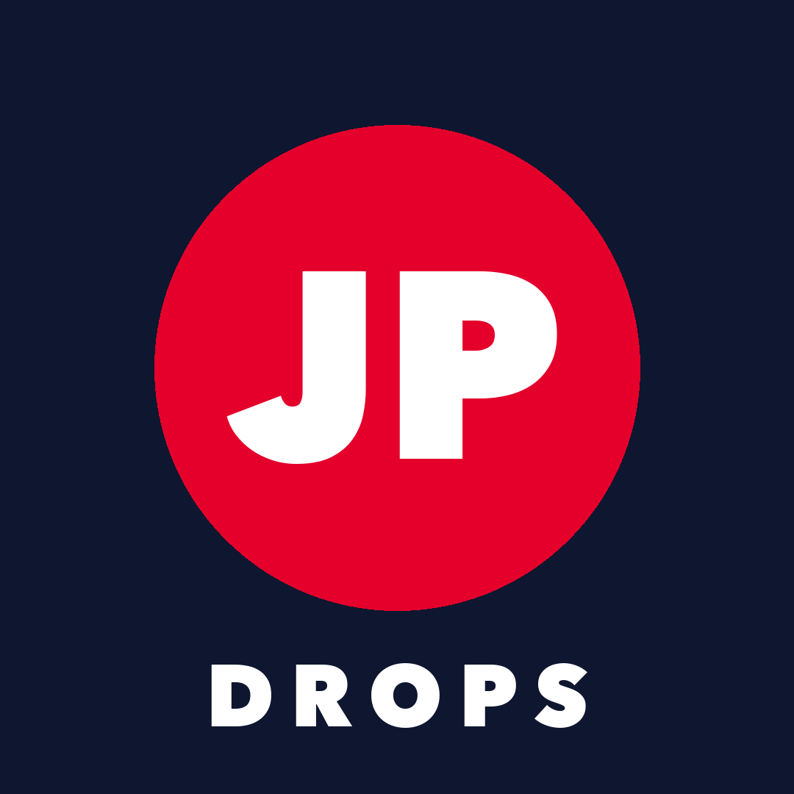

JP Drops
Japan-exclusive anime & game merch news in English — Ichiban Kuji, Gashapon, Japanese TCG, Pokémon Center Japan, Chiikawa and more, usually within minutes of the official announcement.
X@jpdrops_newsThreads@jpdrops_newsBluesky@jpdrops.bsky.socialYouTube@jpdrops_newsTikTok@jpdrops_newsLatest drops
- PokémonPokémon 30th "Connect" Goods + Gym BadgesSep 27, 2026
- ChiikawaChiikawa Nendoroid: Kurimanju & ShisaSep 27, 2026
- ChiikawaNew Chiikawa Goods at Chiikawa MarketSep 27, 2026
- On Sale Now: Ichiban Kuji Ghost in the ShellSep 27, 2026
- ChiikawaOxiClean 1500g Chiikawa Package (Limited)Sep 27, 2026
- ChiikawaChiikawa "Parallel World!?" Mascots Pre-orderSep 27, 2026
- Blue ArchiveBlue Archive Kikyou (Swimsuit) 1/7 Scale FigureSep 27, 2026
- PokémonPokémon x Starbucks Japan CollaborationSep 27, 2026
- Ichiban Kuji Release Calendar: October 2026Sep 26, 2026
- PokémonHalloween at Pokémon Center JapanSep 26, 2026
Guides for overseas fans
- How to buy Ichiban Kuji from outside Japan (2026 guide)
- Pokémon Center Japan exclusives: how overseas fans can get them
- Chiikawa Market: when new items drop and how to get them overseas
- What is Gashapon? Japan's capsule toys explained
By franchise
Blue Archive · Chiikawa · Pokémon
How it works
We monitor official Japanese websites, translate and summarise new merchandise announcements, and add how fans outside Japan can get each item.